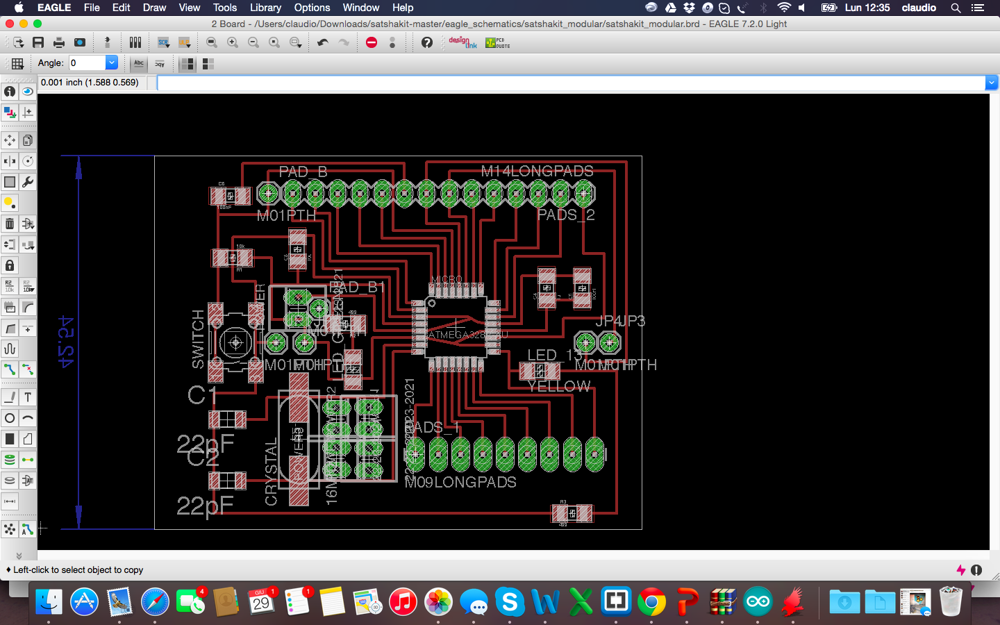
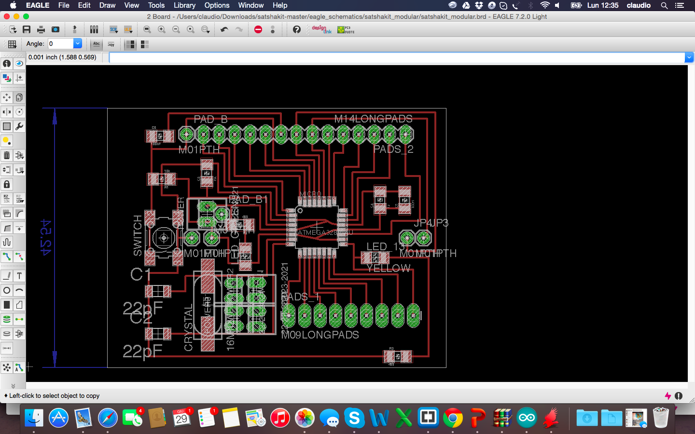

3D Design and printing
The idea has always been to create modular objects, especially as it comes to produce pots for domestic use. Looking on the web I saw many other projects with modular pots but did not like the idea to fit together the pieces and make them modular but always rigid format. I liked the idea of pots to keep at home, beautiful to look at and usable and adaptable as needed. So I started working on Rhino a polygonal shape that featured two different figures that were united with each other.
Then I extruded surface along a tapered curve to give an angle that would allow me to have an object from the bottom closer than the top. After extruded I made a hole in the object with the distances that I had decided through a boulean difference with an object 20% smaller. So I got the first form of my pot.

To achieve the second type I started from the first object but solid and filled and I flipped it, I then created a new object of 20% smaller and with the difference boulean I just created the second geometry. I obtained two types of pots, with simple design but nice and be moved towards in several positions and especially replicable and adaptable to the desired quantity. The pots are now ready to be printed!
I printed the pots with PLA of 1.75mm initially with a Sharebot NG 1EX. Then there were some problems with a failed fan, and so I continued printing the other pots with a Prusa i3 Hephestoes. To create the GCode, I used CURA, changing according to my needs time settings infill. The following are pictures of CURA and the first stages of printing on Sharebot After about 4 hours for each pots, this is the final and satisfactory result:
After about 4 hours for each pots, this is the final and satisfactory result:
3D files of pots are available for download here:

 
